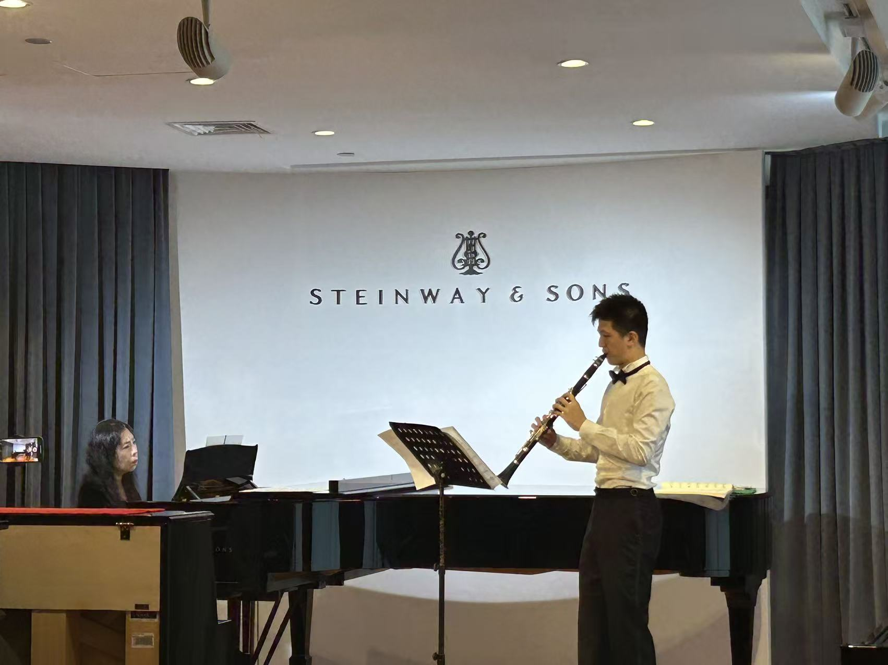
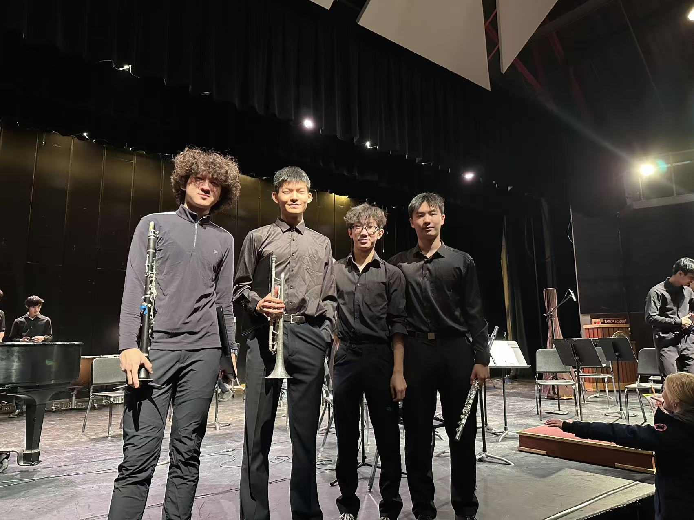

ART
Music practice as a visual and performed record: ensemble, clarinet, piano, and rehearsal moments arranged as a media portfolio.



Music practice as a visual and performed record: ensemble, clarinet, piano, and rehearsal moments arranged as a media portfolio.
